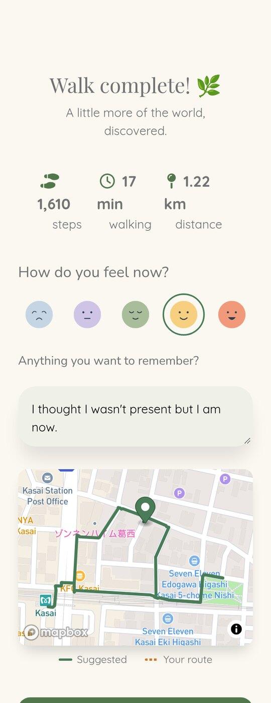
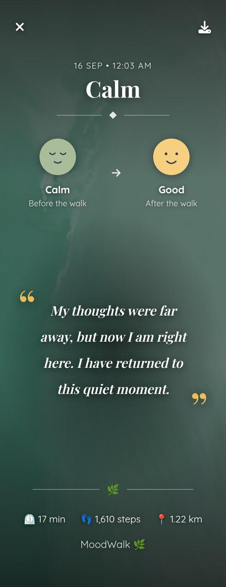

Moodwalk
A walking route generated from how you want to feel — built on real places, real street geometry, and a phone's unreliable idea of where you are.

The problem
Navigation apps answer "how do I get to X". A walk taken to clear your head has no X.
So the route has to be invented — and an invented route is only worth walking if it passes real places, follows real streets, and comes back roughly when it said it would. Three constraints that fight each other.
The walk, end to end
Six screens, in order. Every one of these is the real app running against the real Mapbox and Google Places APIs — the route below is one it generated in Higashikasai, Tokyo, and the walk is one that was actually recorded against it.
-
01 Pick a feeling

Not a filter over pre-made routes. The feeling chooses which Google Places categories get searched near you.
-
02 Say how long

The minutes become a target distance at a fixed 1.33 m/s — the same pace handed to Mapbox, so its estimate agrees with the number you picked.
-
03 Get a route

A loop or a one-way trip, whichever the nearby places support. Distance and step count come from the route Mapbox actually returned.
-
04 Walk it

Turn-by-turn from the route's own steps, simplified to left, right and end. GPS breadcrumbs are buffered and posted as you go.
-
05 Log how it went

Steps, time and distance come from the breadcrumb trail, and the map draws the suggested route against the one actually walked.
-
06 Keep the memory

Mood before and after, and a line written by the model from the reflection you left. The one piece of generated prose the walker actually keeps.
How a route gets built
Five stages, each returning its own result object. The first one that fails stops the chain and surfaces its own error, so a dead Google Places key never looks like a Mapbox problem. Describing runs last on purpose: Mapbox rejects candidate routes often enough that describing first would pay for three descriptions and throw two away.
- 01 RouteBuilder Takes a theme and a target duration. Owns the retry loop.
- 02 PoiFinder Asks Google Places for real nearby spots, one call per category.
- 03 PoiSelector Picks 2–4 of them. Plain Ruby, no model call. Where the thinking is.
- 04 JourneyGenerator Routes through them via Mapbox Directions. Rescales and retries.
- 05 RouteDescriber Writes the description. Runs last, and mostly off the request.
Worth noting what is not here: the model does not choose the waypoints. It writes prose about waypoints already chosen by code that can be tested — and it writes it after the fact. Every journey is saved with a plain-Ruby description first, so nothing is ever blank, and a background job replaces it when the model answers. The call was two thirds of a route's build time.
Loop, or one way?
A loop that retraces its own steps is just a there-and-back with extra confidence.
The first version flipped a coin. It produced loops that walked you up one street and straight back down it, because every interesting place happened to lie in the same direction. The fix is geometric: measure the angular width of the smallest compass arc containing all the waypoints — the bearing spread — and only keep the loop if it clears ROUND_TRIP_SPREAD_THRESHOLD_DEGREES, which is 90°.
Every place sits in the same direction. Under 90°, so the loop is dropped and the same candidates are re-selected as a one-way trip.
The places fan out around the start. Clears 90°, so the route comes back a different way than it went.
Guidance that survives bad GPS
Arrival was originally "is the latest GPS fix within 8 metres of the next waypoint". On a phone, between two fixes you can move fifty metres. A short leg gets jumped clean over, no fix ever lands inside its radius, and guidance stalls forever on a corner you turned two minutes ago.
It now tests the segment between consecutive fixes against each upcoming waypoint, not just the newest point. The lookahead is capped at five, because a loop's final waypoint sits back at the start — geometrically close to you the entire walk, and nowhere near you along the path.
The whole app is a Rails 8 monolith on PostGIS. The two map API calls are synchronous, inside the request; both LLM calls were moved onto Solid Queue once it was measured how much of the wait they were.
Read the code